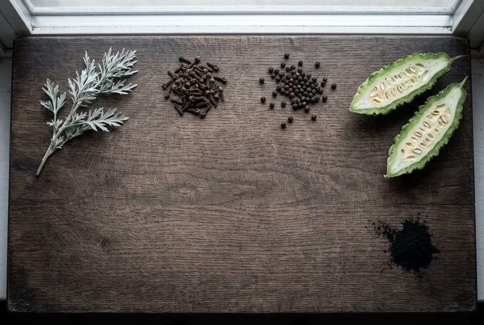
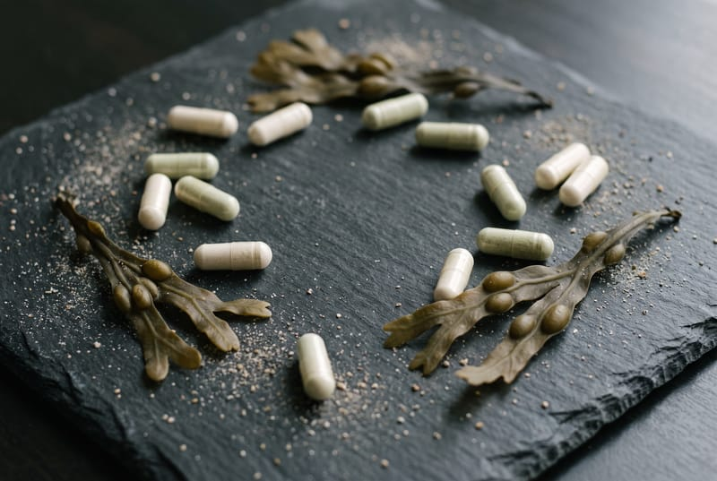

The journal
What is in the jar
The questions we get asked in the shop, written up. What a plant is, how to tell the real one from the copy, how to take it and who should not. There are no health claims in any of it, which is the rule we work to and the reason the rest can be trusted.

Whole fruiting body, no rice flour.
A lion's mane has two parts, and only one of them is the mushroom you picture. How to tell which one you have bought, from the label alone.

Wormwood, and why Decolonise has a stop date
Nine ingredients, one of them Artemisia absinthium. What thujone is, why the gap between courses is four months, and who should not take it at all.

One alga, water, and a drop of oil.
The plain Chondrus crispus gel has three things in it. How it differs from Northern Soul, why there is an oil in a seaweed gel, and why it gets 28 days rather than a shelf life.
What shilajit is, and how to take a resin.
It is not a plant and not a mushroom. What dual-extracted and lab tested cover, what they leave out, and how a portion the size of a pea is supposed to work.

How much iodine is in a capsule, and in a spoon.
Seaking prints 75 µg in every capsule and 150 µg in the two you take. The gel prints nothing. What those numbers are measured against, and why the jar has none.

Which sea moss? Two plants, one name on the jar.
Cold-water Chondrus crispus and warm-water Eucheuma cottonii are both sold as Irish moss. How to tell them apart, gel or capsules, why a gel goes watery, and who should not take it.


Being written
Next on the bench
- Bladderwrack: the brown alga that carries the formula
- Where to buy sea moss in Liverpool
Roughly one a fortnight.